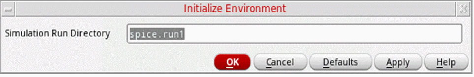
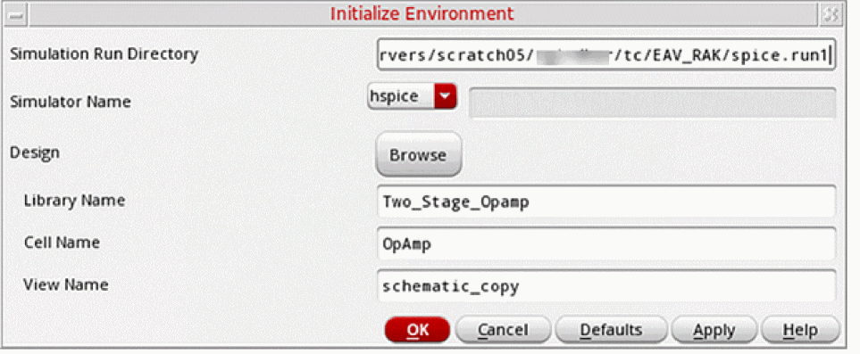

Initializing the Simulation Environment
The first step in simulation is setting up the simulation environment. When you initialize the simulation environment, you specify the following:
Initially, all commands on the Simulation menu, except Initialize, are disabled. The remaining menu commands are enabled after you have used the Initialize command to initialize the simulation environment.
To initialize a new simulation run directory:
-
In the schematic window, choose Simulation – Initialize.
The Initialize Environment form appears.
 - Specify the name of the simulation run directory using a full or a relative path.
-
Click OK.
The Initialize form is overlaid by an expanded version of the same form that shows the following additional fields.
The values on this form are the current window and default SE values. You can edit these values by using the Browse button or specifying new values in the form. -
From the Simulator Name list, select a simulator.
The possible values arehspice,spice,sage, andother. If your preferred simulator is not listed, selectotherand specify the name of the simulator in the adjoining text field. - Specify the name of the library containing the top level of your design.
- Specify the cell name of your design.
-
Specify the view name of your design (for example,
schematic). - Click OK.
The system initializes the simulation environment with the specified directory.
To use the Initialize Environment form for an existing run directory:
-
In the schematic window, choose Simulation – Initialize.
The Initialize Environment form appears. - Specify a new name for the Simulation Run Directory.
- Click OK.
The system reinitializes the simulation environment with the specified directory.
Related Topics
Return to top